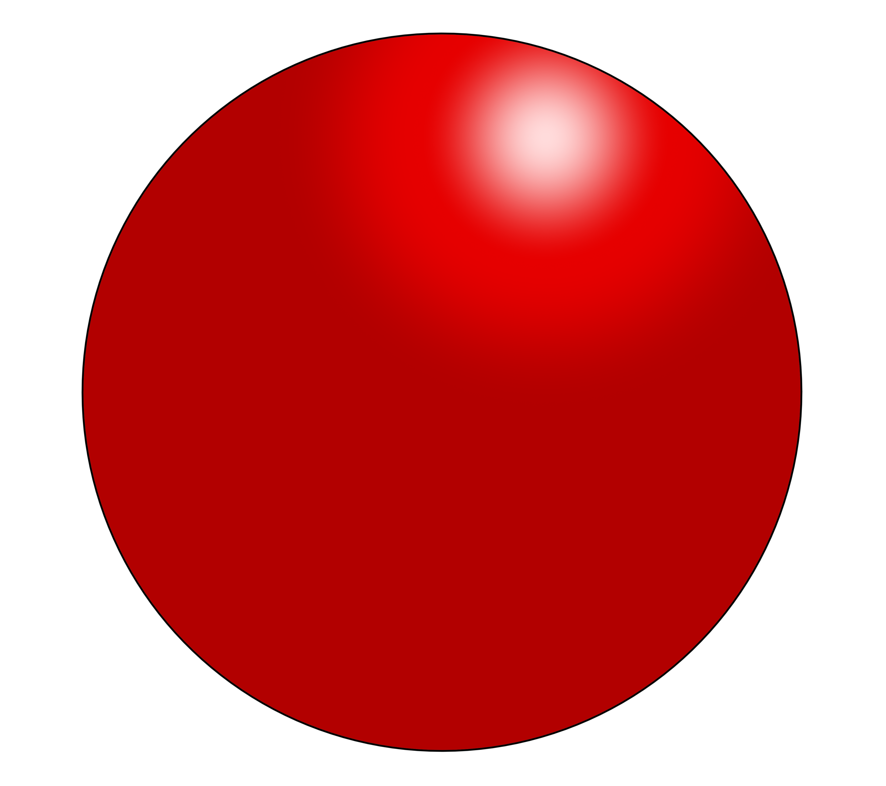

In the homepage, we talked about the different feature of atoms or atomic sturcture(on the left). Moving on, ideas about atoms from scholars in Ancient Greece (Democritus (460 to 370 BC) and his mentor Leucippus) were rudimentary compared to our concepts today, they outlined the idea that everything is made of atoms, invisible and indivisible spheres of matter of infinite type and number.
These scholars imagined atoms as varying in shape depending on the type of atom. They envisaged iron atoms as having hooks which locked them together, explaining why iron was a solid at room temperature. Water atoms were smooth and slippery, explaining why water was a liquid at room temperature and could be poured. Though we now know that this is not the case, their ideas laid the foundations for future atomic models.
It was a long wait, however, before these foundations were built upon. It was not until 1803 that the English chemist John Dalton started to develop a more scientific definition of the atom. He drew on the ideas of the Ancient Greeks in describing atoms as small, hard spheres that are indivisible, and that atoms of a given element are identical to each other. The latter point is one that pretty much still holds true, with the notable exception being isotopes of different elements, which differ in their number of neutrons.
However, since the neutron would not be discovered until 1932, we can probably forgive Dalton for this oversight. He came up with theories about how atoms combine to make compounds and also came up with the first set of chemical symbols for the known elements. Dalton’s outlining of atomic theory was a start, but it still didn’t really tell us much about the nature of atoms themselves.
What followed was another, shorter lull where our knowledge of atoms didn’t progress all that much. There were some attempts to define what atoms might look like, such as Lord Kelvin’s suggestion that they might have a vortex-like structure, but it wasn’t until just after the turn of the 20th Century that progress on elucidating atomic structure really started to pick up.
The atomic ideas of Leucippus and Democritus (from about 440 BC) led Hero of Alexandria (150 A.D.) to make use of atoms to explain compression and rarefaction (in sound waves). Hero's model had a vacuum between atoms. One proof he cited was that fire could enter into a material showing that it had openings. There are spaces between atoms.
Atomism in the Middle Ages The works of other Greek scientists including Aristotle were rediscovered by Western Europe about 1200 in Latin translations of Arabic translations from Greek translations. Much discussion followed among such people as St. Thomas Aquinas (1225 - 74) and Roger Bacon (1214 - 92).
The Catholic Church began to elevate Aristotle's writings to the same level as Scripture and associated atomic thinking with Godlessness At age 21, Peter Ramus (1515 - 1572) presented a thesis based on the idea: "all that Aristotle has said is false." After attacking Aristotle's ideas for a whole day and being refuted, Ramus was finally awarded his degree with honours.
In 1543, he wrote two books (against Aristotle) that provoked violent reactions. Their publication was banned, the books were burned, and Ramus was silenced by order of the Pope, Francis I. After the Pope died a year later, Ramus resumed teaching and was appointed professor in 1551.
The next page “model of atoms” will give more information on other physicists and their atom model (J.J Thomson and Earnest Rutherford). Click here here to find out more.
Big thank you for texts and media to:
pixabay.com, magnific.com, universetoday.com, Britannica.com, scienceholic.org, interest.com, bbc.co.uk/bitesize, Current vice president of Hamilton girls high school (Mr C. Scrimgeour).Thanks for stopping by! Hope you learned something new :)
Website made by Jomi Omoyeni.
Contact me; jom24600@my.hghs.school.nz.
*If you found texts or images that belongs to you and you haven't been given credit, deepest apologies. Please do contact me so you can be added to the credit list :).